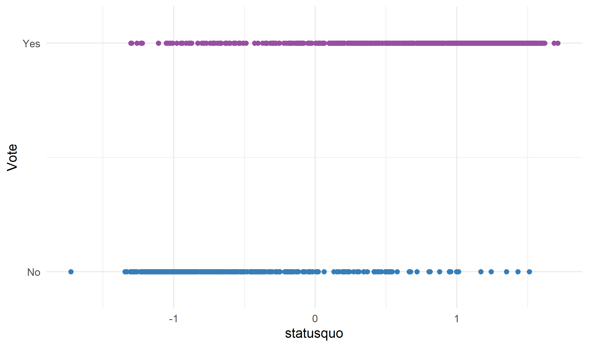
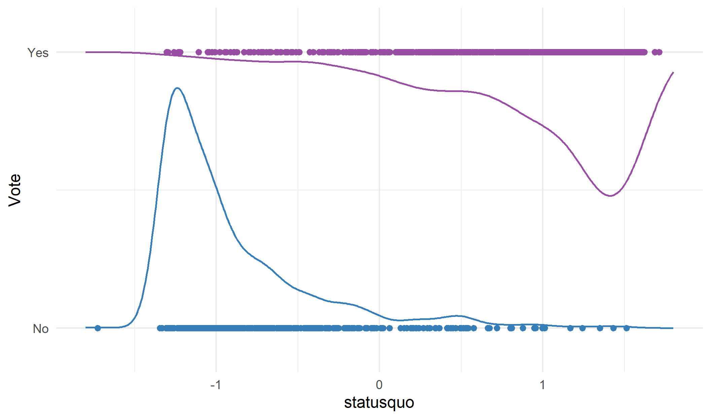
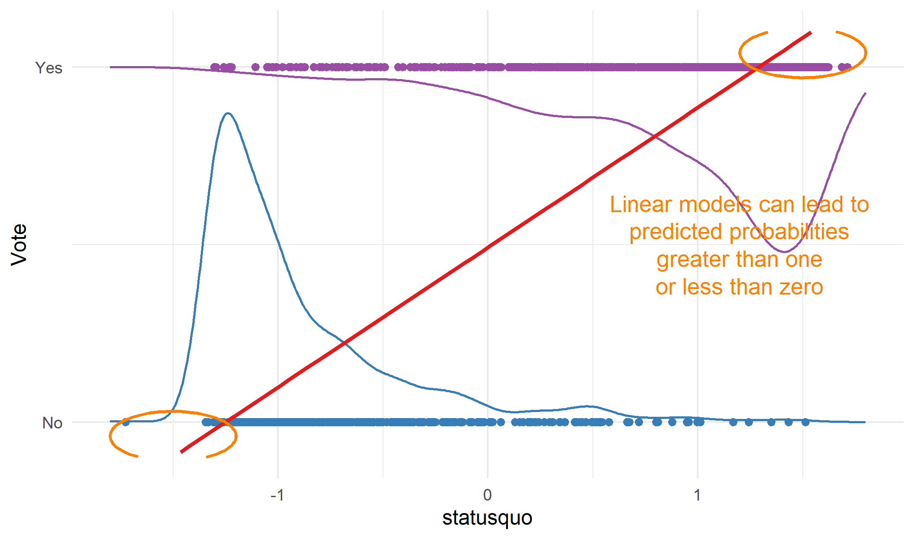
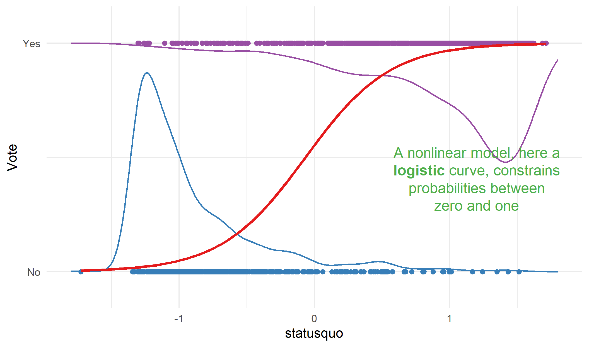
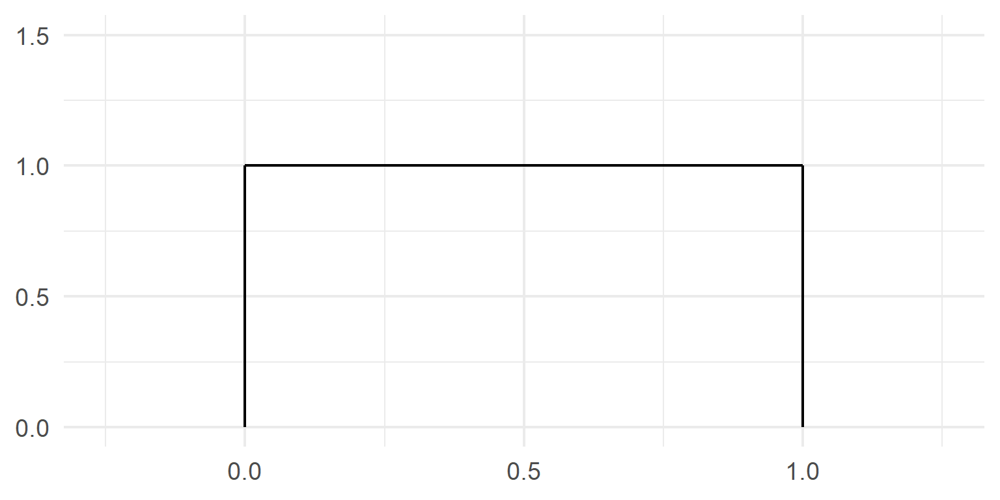
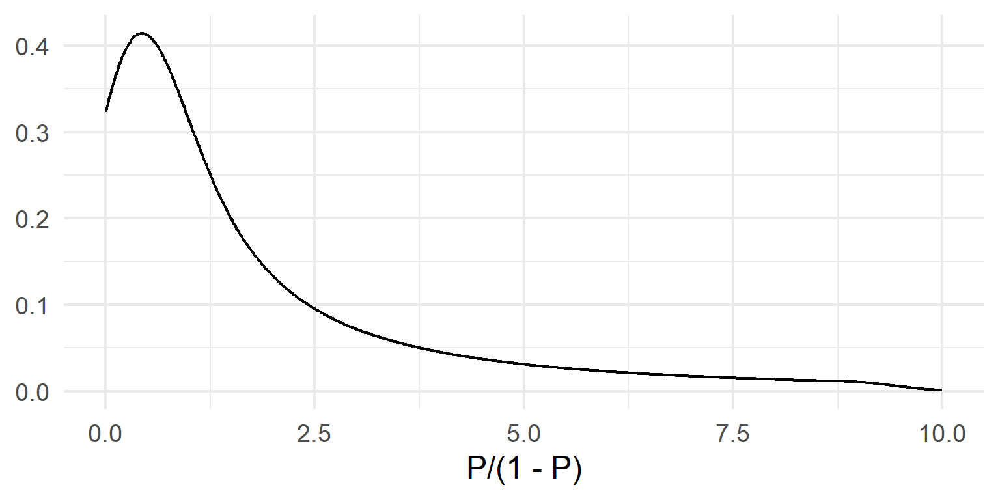
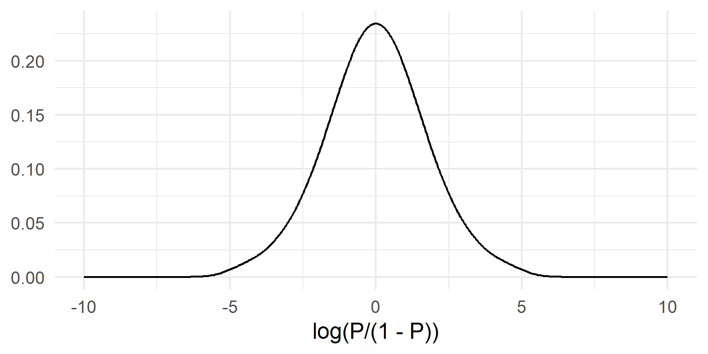

Nearly all methods we’ve learned so far have assumed a continuous, normally distributed outcome variable and/or residuals
Often, this is implausible:
Categorical outcome
Count data
Symptom inventory with many zeros
For today, let’s consider a binary outcome variable
Want to model/predict the probability of observing one outcome instead of the other
Probability can be thought of as the average of a binary variable (categories coded 0 or 1)
General Linear Model
The multiple regression model we have learned so far is also known as ordinary least squares (OLS) regression (after the method used to obtain estimated coefficients)
Three characteristics of OLS regression:
Linear in coefficients (linear in parameters)
Predicted outcome is a linear combination of predictors, where weights are regression coefficients
Distribution of residuals:
Assume normally distributed
Assume homoscedasticity
Score of predicted outcome (\(\hat{y}\))
\(\hat{y}\) has the same units as the observed outcome \(y\)
Generalized Linear Model
Generalizedlinear models (GLMs) are a broad class of regression models that allows for nonlinear relationships between predictors and the criterion
Useful for discrete outcomes, counts
OLS regression is a special case of a GLM
GLMs do not necessarily assume a continuous outcome, normally distributed residuals, or homoscedasticity
Logistic regression is one of the most popular GLMs for predicting probabilities of binary categorical outcomes.
Example: Voting Behavior
In 1973, Augusto Pinochet took power in Chile after a (US-backed) coup d’état, after which the country was ruled by a military dictatorship. In 1988, a referendum was taken to a public vote with options “Yes” - elect Pinochet to hold office for another 8 years, or “No” - hold presidential and parliamentary elections. The “No” vote won, and Chile has been ruled democratically since 1990.
The data is from a national survey conducted about 5 months before the referendum.
The dataset includes demographic information and voting intentions from 2700 Chileans, including:
statusquo: Standardized measure of support for the status quo (higher values indicate greater support)
education: “P” primary school, “S” secondary school, “PS” post-secondary school
Goal: predict voting intentions from demographics
Voting Data
For this analysis, we will only include survey participants who responded “Yes” or “No”. We will also omit the small number of cases with missing data on the vote, education, or statusquo variables. Now there are 1747 observations
# A tibble: 1,747 × 9region population sex age education income statusquo vote voteYN<fct><int><fct><int><fct><int><dbl><dbl><fct>1 N 175000 M 65 P 35000 1.01 1 Y 2 N 175000 M 29 PS 7500 -1.30 0 N 3 N 175000 F 38 P 15000 1.23 1 Y 4 N 175000 F 49 P 35000 -1.03 0 N 5 N 175000 F 23 S 35000 -1.10 0 N 6 N 175000 F 28 P 7500 -1.05 0 N 7 N 175000 M 26 PS 35000 -0.786 0 N 8 N 175000 F 24 S 15000 -1.11 0 N 9 N 175000 M 41 P 15000 -1.30 0 N 10 N 175000 M 64 P 15000 1.37 1 Y # ℹ 1,737 more rows
Weird Scatterplot

Different Distributions

Linear Regression?

Logistic Regression

Probability \(\rightarrow\) Normality
Probabilities are distributed between 0 and 1. The uniform probability distribution is a distribution such that all values between 0 and 1 are equally likely.

Problem: Probability is double bounded. How can we map probability onto something like a normal distribution?
Probability \(\rightarrow\) Odds
Step 1: Convert probability to \(odds = \frac{P}{1-P}\)

Odds are only single bounded. How can we now get odds to be unbounded?
Odds \(\rightarrow\) Log Odds
Step 2: Take the log (when we say log we usually will mean natural log by default)

\(ln(1) = 0\). Taking the log makes anything between 0 and 1 negative, and anything greater than 1 positive (anything below 0 is undefined)
Logit Function
We can now estimate our model in log odds, aka logit units, as
The logit is the function of \(\hat{P}\) that is linearly related to \(x_1\)
Logistic Regression in R
Logistic regression models fit using the glm() function built into R
Same formula notation as multiple linear regression
Must add argument “family = binomial” to indicate logistic regression (instead of another GLM)
Unlike linear regression, which uses ordinary least squares (OLS), glm() estimates the coefficients by maximum likelihood: an iterative procedure that finds the coefficient values that make the observed data most likely
glm1 <-glm(vote ~ statusquo, Chile, family = binomial)coef(glm1)
(Intercept)statusquo0.2126477 3.2001829
These coefficients imply the following fitted equation:
Then, \(\chi^2(\text{dif}) \sim \chi^2(df)\), where \(df\) equals the difference in the number of estimated parameters between Model 1 and the Null Model
Null Model: all predicted probabilities are the same
\(-2\times\) log likelihood is evaluated at the maximum likelihood parameter estimates
Deviance\(= -2 \times\) log likelihood
Model Comparison in R
The anova() function (confusingly) is often used for model comparison
Here, we compare model with intercept only (Null Model) to a model with both slope and intercept for statusquo
\(\exp(b_1)\): factor by which odds change for one unit increase of \(x_1\) holding \(x_2\) constant
\(\exp(b_2)\): factor by which odds change for one unit increase of \(x_2\) holding \(x_1\) constant
Multiple Predictors in R
Let’s add education to the model. Remember that education is a factor variable with 3 categories - R will represent this with 2 dummy variables
glm2 <-glm(vote ~ statusquo + education, Chile, family = binomial)summary(glm2)$coefficients
Estimate Std. Error z value Pr(>|z|)(Intercept)0.7394976 0.1609942 4.593317 4.362552e-06statusquo 3.1891000 0.1437255 22.188823 4.403642e-109educationPS-1.1342291 0.2853139 -3.975372 7.026927e-05educationS-0.7497178 0.2178494 -3.441451 5.786040e-04
We can see that “S” (secondary) and “PS” (post-secondary) each have their own coefficient - that means that “P” (primary) is the reference level
\(b_0 = .739\): logit for someone with a primary school education and the average support for the status quo
\(b_1 = 3.19\): change of logit when statusquo increases by 1 unit (1 SD), holding education constant
\(b_2 = -1.13\): decrease in logit (log odds) of voting “yes” for someone with a post-secondary education (vs. a primary school education), holding support for the status quo constant
\(b_3 = -0.75\): decrease in logit (log odds) of voting “yes” for someone with a secondary education (vs. a primary school education), holding support for the status quo constant
Odds Interpretations
Odds interpretation of the same model:
Estimate Std. Error z value Pr(>|z|)(Intercept)0.7394976 0.1609942 4.593317 4.362552e-06statusquo 3.1891000 0.1437255 22.188823 4.403642e-109educationPS-1.1342291 0.2853139 -3.975372 7.026927e-05educationS-0.7497178 0.2178494 -3.441451 5.786040e-04
\(\exp(b_0) = \exp(.739) = 2.09\): odds of yes vote (vs no) for someone with a primary school education and the average support for the status quo
\(\exp(b_1) = 24.27\): factor by which odds of yes vote (vs no) changes for one unit increase in statusquo holding education constant
\(\exp(b_2) = 0.32\): factor by which odds of yes vote (vs no) changes for someone with post-secondary education (vs a primary school education) holding statusquo constant
\(\exp(b_3) = 0.47\): factor by which odds of yes vote (vs no) changes for someone with secondary education (vs a primary school education) holding statusquo constant
Confidence Intervals
Estimate Std. Error z value Pr(>|z|)(Intercept)0.7394976 0.1609942 4.593317 4.362552e-06statusquo 3.1891000 0.1437255 22.188823 4.403642e-109educationPS-1.1342291 0.2853139 -3.975372 7.026927e-05educationS-0.7497178 0.2178494 -3.441451 5.786040e-04
Confidence interval for (population) \(b_j\):
\[b_j \pm z_{\alpha/2}\times s_{b_j}\]
95% CI for \(b_0: .74 \pm 1.96\times .16 = \boldsymbol{[.42,\ 1.06]}\)
95% CI for \(b_1: 3.19 \pm 1.96\times .14 = \boldsymbol{[2.91,\ 3.47]}\)
95% CI for \(b_2: -1.13 \pm 1.96\times .29 = \boldsymbol{[-1.69,\ -.58]}\)
95% CI for \(b_3: -.75 \pm 1.96\times .22 = \boldsymbol{[-1.18,\ -.32]}\)
Odds CIs
Confidence interval for (population) as odds ratio:
Lower limit = \(\exp(\text{lower limit of } b_1)\)
Upper limit = \(\exp(\text{upper limit of } b_1)\)
\(\chi^2(\text{dif}, 2) = 20.376, p < .001\), which indicates significantly better fit in the model with both statusquo and education as predictors over the model with only statusquo as a predictor
Information Criteria
Another way to compare models is through information criteria, which consider the tradeoff between goodness-of-fit (measured by the deviance) and model complexity (measured by a penalty term, usually a function of the number of estimated parameters)
\(k\): number of estimated parameters; \(N\): sample size
Models with lower AIC or BIC for the same data are preferred
Information Criteria
AIC is lower for model 2 (statusquo + education as predictors)
AIC(glm1); AIC(glm2)
[1] 756.0355
[1] 739.6597
BIC is lower for model 2 (statusquo + education as predictors)
BIC(glm1); BIC(glm2)
[1] 766.9668
[1] 761.5223
I recommend looking at multiple measures (including classification accuracy, likelihood ratio test, information criteria) to decide on the most appropriate model
Other relevant tools not covered include false positive rates, false negative rates, ROC curves, confusion matrix
Related Methods
Methods somewhat similar to logistic regression include:
Discriminant function analysis
Similar goal as logistic regression
Find a linear combination of predictors that maximally separates two groups
Multinomial regression
More than 2 ordered categories: proportional odds model
More than 2 unordered categories: multinomial logit model
Poisson regression and negative binomial regression
Often used for count data
Particularly useful for data with excessive 0’s (see also zero-inflated models)
APA Writeup
We fit a logistic regression predicting a “yes” vote (vs. “no”) in the 1988 Chilean plebiscite from support for the status quo and education level, with primary school education as the reference group (\(N = 1,747\)). A likelihood ratio test indicated that adding education to a model containing only status quo support significantly improved model fit, \(\chi^2(2) = 20.38\), \(p < .001\). Both information criteria also favored the model including education (AIC = 739.66 vs. 756.04; BIC = 761.52 vs. 766.97).
In the model with both predictors, each one-standard-deviation increase in status quo support was associated with 24.27 times the odds of voting “yes,” \(OR = 24.27\), 95% CI \([18.31, 32.16]\), holding education constant. Compared with respondents with a primary school education, respondents with a post-secondary education had lower odds of voting “yes,” \(OR = 0.32\), 95% CI \([0.18, 0.56]\), as did respondents with a secondary education, \(OR = 0.47\), 95% CI \([0.31, 0.72]\). The model correctly classified 92.7% of respondents.